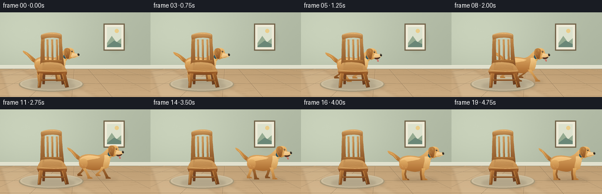
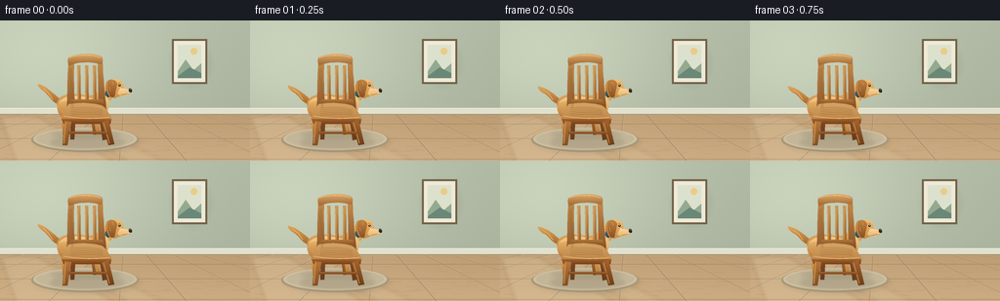

CODING AGENTS AS PIXEL WORLD MODELS
traex/GPT-6.1-Sol · dynamic_spatial_relationship_0005
点击播放 · 原生 RGB 像素
逐轮保存的候选
回放视频、检查图与代码变化。
每份候选均可单独播放。实际图片检查记录在下方工具轨迹中。
候选 01播放与检查图
点击播放 · 原生 RGB 像素


展开代码变化
--- 上一保存版本
+++ 本次保存版本
@@ -0,0 +1,213 @@
+from pathlib import Path
+import math
+import numpy as np
+from PIL import Image, ImageDraw, ImageFilter
+import artifact_io
+
+ROOT=Path(__file__).resolve().parent
+W,H,S=256,144,4
+rng=np.random.default_rng(14)
+
+def curve(points, steps=15):
+ # Cubic Bezier paths: initial point followed by groups of 3 controls.
+ out=[points[0]]
+ p0=np.array(points[0],float)
+ for i in range(1,len(points),3):
+ if len(points[i:i+3]) < 3:
+ out.extend(points[i:]);break
+ p1,p2,p3=map(lambda v:np.array(v,float),points[i:i+3])
+ for t in np.linspace(0,1,steps)[1:]:
+ q=(1-t)**3*p0+3*(1-t)**2*t*p1+3*(1-t)*t*t*p2+t**3*p3
+ out.append(tuple(q))
+ p0=p3
+ return out
+
+def poly(im, pts, color):
+ ImageDraw.Draw(im).polygon([(round(x*S),round(y*S)) for x,y in pts],fill=color)
+
+def line(im,pts,color,width=1):
+ ImageDraw.Draw(im).line([(round(x*S),round(y*S)) for x,y in pts],fill=color,width=max(1,round(width*S)),joint='curve')
+
+def ellipse(im, box, color):
+ ImageDraw.Draw(im).ellipse(tuple(round(a*S) for a in box),fill=color)
+
+def shaded(im,pts,top,bottom,noise=0):
+ mask=Image.new('L',im.size); poly(mask,pts,255)
+ a=np.array(mask)
+ ys=np.where(a>0)[0]
+ if not len(ys):return
+ t=np.clip((np.arange(H*S)-ys.min())/max(1,ys.max()-ys.min()),0,1)[:,None,None]
+ arr=np.broadcast_to(np.array(top)[None,None,:]*(1-t)+np.array(bottom)[None,None,:]*t,(H*S,W*S,3)).copy()
+ if noise:
+ arr+=np.random.default_rng(21).normal(0,noise,(H*S,W*S,1))
+ im.paste(Image.fromarray(np.uint8(np.clip(arr,0,255))), (0,0),mask)
+
+def shadow(im,box,opacity=35,blur=3):
+ lay=Image.new('RGBA',im.size);ellipse(lay,box,(52,39,24,opacity));lay=lay.filter(ImageFilter.GaussianBlur(blur*S));im.alpha_composite(lay)
+
+# A quiet, sunlit interior; the background remains fixed.
+def background():
+ yy,xx=np.mgrid[0:H*S,0:W*S]
+ x=xx/S; y=yy/S
+ light=np.exp(-((x-44)/130)**2-((y-39)/95)**2)
+ base=np.zeros((H*S,W*S,3),float)
+ for k,(c,l) in enumerate(zip((175,184,163),(28,28,26))):base[:,:,k]=c+light*l-y*.06
+ floor=y>=94
+ for k,c in enumerate((187,155,113)):
+ base[:,:,k]=np.where(floor,c+(y-94)*.33+light*13,base[:,:,k])
+ base+=np.random.default_rng(3).normal(0,.45,(H*S,W*S,1))
+ im=Image.fromarray(np.uint8(np.clip(base,0,255))).convert('RGBA')
+ # wall skirting and its shadow
+ poly(im,[(0,90),(256,90),(256,96),(0,96)],(225,224,205))
+ line(im,[(0,90),(256,90)],(239,238,219),.7)
+ line(im,[(0,96),(256,96)],(137,133,106),.55)
+ # oak plank floor, vanishing point well outside the composition
+ for v in [-180,-100,-25,50,122,191,274,356,443]:
+ x0=128+(v-128)*.34
+ line(im,[(x0,96),(v,144)],(156,129,95),.5)
+ line(im,[(x0+1,96),(v+1,144)],(212,184,145),.35)
+ for y0 in [106,121,142]:line(im,[(0,y0),(256,y0)],(162,136,100),.45)
+ # fine grain and small floor joints
+ for i in range(90):
+ x0=float(rng.uniform(0,256));y0=float(rng.uniform(98,144))
+ line(im,[(x0,y0),(x0+float(rng.uniform(3,21)),y0+.15)],(184,153,111,70),.2)
+ # Diffuse window light entering from offscreen left.
+ sun=Image.new('RGBA',im.size)
+ poly(sun,[(0,98),(38,98),(115,144),(16,144)],(255,247,219,28))
+ poly(sun,[(51,98),(71,98),(166,144),(131,144)],(255,247,219,21))
+ sun=sun.filter(ImageFilter.GaussianBlur(2*S));im.alpha_composite(sun)
+ # A restrained framed print provides depth without competing with the action.
+ shadow(im,(174,19,217,69),11,2)
+ poly(im,[(176,19),(212,19),(212,65),(176,65)],(113,98,72))
+ poly(im,[(178,21),(210,21),(210,63),(178,63)],(238,234,215))
+ poly(im,[(182,25),(206,25),(206,59),(182,59)],(220,225,205))
+ ellipse(im,(195,28,202,35),(234,204,136))
+ poly(im,[(182,52),(190,40),(198,51),(206,44),(206,59),(182,59)],(148,170,144))
+ poly(im,[(182,57),(194,48),(206,54),(206,59),(182,59)],(106,135,119))
+ # Low, subtly woven oval rug beneath the chair.
+ shadow(im,(34,112,144,137),18,2)
+ ellipse(im,(32,110,142,135),(167,152,121))
+ ellipse(im,(34,110,140,133),(205,190,159))
+ ellipse(im,(37,112,137,131),(195,182,152))
+ rugmask=Image.new('L',im.size);ellipse(rugmask,(37,112,137,131),255)
+ tex=Image.new('RGBA',im.size)
+ for yy0 in np.arange(112,133,.7):line(tex,[(35,yy0),(140,yy0)],(242,226,192,50),.18)
+ for xx0 in np.arange(38,140,1):line(tex,[(xx0,112),(xx0,132)],(125,109,85,28),.16)
+ im.alpha_composite(Image.composite(tex,Image.new('RGBA',im.size),rugmask))
+ return im
+
+BACK=background()
+
+# Sturdy oak dining chair. Its silhouette is fixed in front of the initial dog.
+def chair(im):
+ shadow(im,(51,118,128,132),30,2)
+ # rear legs and back uprights
+ for pts in [[(73,82),(78,82),(76,122),(72,122)],[(99,82),(104,82),(109,122),(105,123)]]:
+ shaded(im,pts,(142,87,42),(103,59,30))
+ # vertical back posts
+ shaded(im,curve([(68,95),(69,80),(69,57),(70,39),(71,36),(75,36),(76,39),(75,60),(76,80),(77,95),(74,97),(71,97),(68,95)]),(196,142,79),(138,84,40))
+ shaded(im,curve([(101,95),(101,76),(100,55),(100,39),(101,36),(104,36),(105,39),(105,58),(108,80),(109,95),(106,97),(104,97),(101,95)]),(202,145,79),(128,76,36))
+ # three airy back slats, dog is visible in the gaps
+ for x in [79,87,95]:
+ shaded(im,[(x,46),(x+3.3,46),(x+3.8,84),(x+.4,84)],(205,153,89),(153,98,46))
+ line(im,[(x+.6,49),(x+1,82)],(233,183,114),.45)
+ # curved crest rail
+ shaded(im,curve([(70,38),(79,33),(96,33),(104,37),(105,39),(105,42),(104,45),(93,42),(81,42),(71,46),(69,44),(69,40),(70,38)]),(221,170,104),(159,104,52))
+ line(im,curve([(71,38),(81,34.5),(95,35),(103,38)]),(243,202,137),.7)
+ # lower horizontal rail behind seat
+ shaded(im,[(73,81),(105,81),(107,87),(71,87)],(176,119,59),(133,79,34))
+ # Seat has a top plane, beveled edge and darker apron.
+ shaded(im,curve([(70,86),(78,84),(95,84),(104,87),(108,89),(112,96),(114,100),(104,105),(73,105),(62,101),(64,96),(67,90),(70,86)]),(213,164,101),(187,131,70))
+ line(im,curve([(65,98),(80,101),(100,101),(112,99)]),(242,196,128),.7)
+ shaded(im,[(63,101),(114,101),(113,106),(65,106)],(160,97,44),(121,66,28))
+ # front legs (splayed, stronger highlights)
+ shaded(im,[(66,103),(73,104),(69,128),(64,128)],(182,119,58),(132,78,33))
+ shaded(im,[(104,104),(111,102),(117,127),(111,128)],(164,100,45),(108,61,26))
+ line(im,[(67,105),(65.5,126)],(222,166,91),.8)
+ line(im,[(106,105),(112,126)],(213,151,77),.8)
+ # stretchers and wood grain
+ line(im,[(70,115),(111,115)],(131,76,32),2.4)
+ line(im,[(71,114.5),(110,114.5)],(183,123,60),.5)
+ for off in [0,1.4]:
+ line(im,curve([(72+off,49),(70+off,62),(75+off,75),(73+off,89)]),(135,90,43,90),.25)
+ for j in range(5):
+ line(im,curve([(72,90+j*1.8),(81,89+j*1.8),(95,88+j*1.8),(105,92+j*1.3)]),(148,96,47,70),.22)
+
+# Golden dog with floppy ears, dark nose, a plumed tail and four jointed legs.
+def dog(im,cx,cy,phase,running):
+ bob=1.25*math.sin(phase*2) if running else .25*math.sin(phase)
+ oy=cy+bob
+ def tr(pts):return [(cx+x,oy+y) for x,y in pts]
+ def path(pts,a,b):shaded(im,tr(curve(pts)),a,b)
+ def ln(pts,c,w):line(im,tr(pts),c,w)
+ def ell(box,c):ellipse(im,(box[0]+cx,box[1]+oy,box[2]+cx,box[3]+oy),c)
+ # swinging long tail; tip curves up, no feline silhouette
+ wag=(2.2*math.sin(phase*1.4))
+ path([(-20,-5),(-28,-6),(-31,-15),(-37,-19+wag),(-40,-21+wag),(-43,-24+wag),(-42,-26+wag),(-36,-25+wag),(-30,-19),(-25,-15),(-22,-12),(-18,-11),(-20,-5)],(223,167,90),(167,103,43))
+ ln([(-37,-22+wag),(-32,-17),(-27,-10)],(243,197,123),.6)
+ # Four legs: far pair first, two near pair after torso.
+ def leg(root,p,far=False):
+ if running:
+ stride=math.sin(p)
+ hip=(root,6)
+ knee=(root+stride*7,15-2*max(0,-stride))
+ foot=(root+stride*13,25-6*max(0,-stride))
+ else:
+ hip=(root,6);knee=(root-1,16);foot=(root+1,25)
+ pts=[(hip[0]-3,hip[1]),(hip[0]+3,hip[1]),(knee[0]+2, knee[1]),(foot[0]+2,foot[1]-2),(foot[0]+5,foot[1]-1),(foot[0]+5.6,foot[1]+1),(foot[0]-2.8,foot[1]+1),(foot[0]-3,foot[1]-2),(knee[0]-2,knee[1])]
+ shaded(im,tr(pts),(170,111,52) if far else (226,173,99),(129,77,34) if far else (179,118,55))
+ if not far:ln([(foot[0]+2,foot[1]-1),(foot[0]+2,foot[1]+.8)],(135,85,38),.35)
+ leg(-12,phase+math.pi,True);leg(16,phase,True)
+ # torso and brisket, three dimensional warm fur
+ path([(-23,-6),(-21,-17),(-5,-17),(10,-14),(21,-16),(23,-25),(30,-27),(39,-25),(39,-17),(30,-7),(28,4),(17,11),(5,12),(-14,10),(-21,5),(-23,-6)],(239,189,116),(171,107,48))
+ # subtle soft volume highlight clipped to body
+ path([(-21,-7),(-16,-15),(-1,-15),(14,-11),(10,-7),(-8,-7),(-15,-3),(-18,-1),(-20,-3),(-21,-7)],(248,204,138),(227,174,101))
+ # chest ruff
+ path([(21,-14),(29,-15),(33,-11),(30,-3),(30,1),(27,5),(28,7),(24,7),(25,10),(21,9),(17,7),(19,1),(21,-7),(21,-14)],(245,205,139),(205,149,78))
+ leg(-15,phase,False);leg(19,phase+math.pi,False)
+ # rear haunch covers upper leg seam
+ path([(-21,-6),(-14,-11),(-6,-7),(-8,2),(-8,8),(-16,11),(-20,6),(-23,2),(-23,-3),(-21,-6)],(227,176,103),(187,124,62))
+ # Blue collar around upper neck
+ path([(27,-21),(29,-23),(33,-22),(34,-20),(34,-17),(32,-14),(30,-12),(27,-13),(26,-16),(27,-18),(28,-20),(27,-21)],(54,114,133),(35,76,94))
+ ell((29,-12,31,-9),(221,182,96))
+ # head, stop and long canine muzzle
+ path([(28,-25),(29,-31),(39,-33),(44,-28),(46,-24),(44,-22),(48,-21),(53,-21),(53,-18),(52,-16),(47,-14),(41,-14),(36,-11),(31,-14),(29,-18),(28,-25)],(241,191,117),(202,139,65))
+ # lighter muzzle and lower jaw
+ path([(42,-22),(46,-21),(51,-21),(53,-19),(53,-16),(48,-15),(46,-13),(41,-14),(38,-15),(40,-18),(41,-20),(42,-22)],(250,216,162),(228,179,107))
+ # drooping ear, rich shade and a crisp lit edge
+ path([(29,-29),(33,-32),(38,-30),(39,-26),(38,-22),(37,-17),(36,-13),(34,-11),(30,-13),(28,-18),(27,-23),(27,-27),(29,-29)],(192,132,66),(139,81,35))
+ ln(curve([(29,-28),(27.5,-24),(29,-17),(31,-14)]),(218,160,83),.65)
+ # eye, brow, glint and nose
+ ell((40,-25.7,42.5,-23.5),(57,39,25));ell((40.8,-25.4,41.5,-24.7),(254,243,205))
+ ln([(40,-27),(42,-27)],(173,113,53),.6)
+ path([(51,-21),(52,-22),(54,-21),(54,-19),(54,-17),(53,-17),(51,-18),(50.8,-19),(50.8,-20),(51,-21)],(65,55,43),(30,28,24))
+ ln([(51.5,-20.5),(53,-20.4)],(147,135,108),.4)
+ # a relaxed open mouth while running
+ if running:
+ path([(42,-15),(46,-14),(50,-16),(51,-16),(50,-12),(44,-11),(42,-13),(41,-14),(41,-14),(42,-15)],(71,43,32),(90,51,36))
+ path([(46,-12),(49,-12),(49,-9),(48,-8),(46,-8),(45,-10),(46,-12)],(221,142,122),(190,98,88))
+ else:ln([(43,-14.8),(49,-16)],(100,65,32),.6)
+ # restrained fur texture: short strokes that travel with the animal
+ for x,y,dx,dy in [(-18,-8,3,-1),(-13,-11,3,-.5),(-3,-11,4,.2),(7,-9,4,.9),(-18,1,2,3),(-12,4,2,1),(21,-7,1,3),(24,-5,0,3),(34,-28,1,3),(31,-23,1,4)]:
+ ln([(x,y),(x+dx,y+dy)],(246,201,130,120),.35)
+
+frames=[]
+for i in range(20):
+ im=BACK.copy()
+ # First second: stationary and visibly behind the chair. Then sprint right.
+ if i<4:
+ cx=81;cy=91;moving=False;phase=i*.5
+ elif i<=15:
+ t=(i-4)/11
+ # smooth acceleration into a run, gentle braking near the right edge
+ u=t*t*(3-2*t)
+ cx=81+108*u;cy=91+3*u;moving=True;phase=(i-4)*1.22
+ else:
+ cx=189+(i-15)*.35;cy=94;moving=False;phase=(i-15)*.8
+ shadow(im,(cx-30,cy+22,cx+44,cy+29),27 if moving else 33,2.2)
+ dog(im,cx,cy,phase,moving)
+ chair(im)
+ rgb=im.convert('RGB').resize((W,H),Image.Resampling.LANCZOS)
+ frames.append(np.array(rgb,dtype=np.uint8))
+artifact_io.save(np.stack(frames),ROOT)
+print('Saved 20 RGB frames at 256x144, 4 fps.')
可观测工具轨迹
实际执行的命令与返回图片。
命令 1exit 0
/bin/bash -lc 'ls -la && cat prompt.txt && cat GENERATION_RULES.md && cat task_spec.json'
命令 2exit 0
/bin/bash -lc "cat artifact_io.py && python - <<'PY'
import PIL,numpy
print('PIL and numpy ready')
PY"命令 3exit 1
/bin/bash -lc "cat > generate.py <<'PY'
from pathlib import Path
import math
import numpy as np
from PIL import Image, ImageDraw, ImageFilter
import artifact_io
ROOT=Path(__file__).resolve().parent
W,H,S=256,144,4
rng=np.random.default_rng(14)
def curve(points, steps=15):
# Cubic Bezier paths: initial point followed by groups of 3 controls.
out=[points[0]]
p0=np.array(points[0],float)
for i in range(1,len(points),3):
p1,p2,p3=map(lambda v:np.array(v,float),points[i:i+3])
for t in np.linspace(0,1,steps)[1:]:
q=(1-t)**3*p0+3*(1-t)**2*t*p1+3*(1-t)*t*t*p2+t**3*p3
out.append(tuple(q))
p0=p3
return out
def poly(im, pts, color):
ImageDraw.Draw(im).polygon([(round(x*S),round(y*S)) for x,y in pts],fill=color)
def line(im,pts,color,width=1):
ImageDraw.Draw(im).line([(round(x*S),round(y*S)) for x,y in pts],fill=color,width=max(1,round(width*S)),joint='curve')
def ellipse(im, box, color):
ImageDraw.Draw(im).ellipse(tuple(round(a*S) for a in box),fill=color)
def shaded(im,pts,top,bottom,noise=0):
mask=Image.new('L',im.size); poly(mask,pts,255)
a=np.array(mask)
ys=np.where(a>0)[0]
if not len(ys):return
t=np.clip((np.arange(H*S)-ys.min())/max(1,ys.max()-ys.min()),0,1)[:,None,None]
arr=np.broadcast_to(np.array(top)[None,None,:]*(1-t)+np.array(bottom)[None,None,:]*t,(H*S,W*S,3)).copy()
if noise:
arr+=np.random.default_rng(21).normal(0,noise,(H*S,W*S,1))
im.paste(Image.fromarray(np.uint8(np.clip(arr,0,255))), (0,0),mask)
def shadow(im,box,opacity=35,blur=3):
lay=Image.new('RGBA',im.size);ellipse(lay,box,(52,39,24,opacity));lay=lay.filter(ImageFilter.GaussianBlur(blur*S));im.alpha_composite(lay)
# A quiet, sunlit interior; the background remains fixed.
def background():
yy,xx=np.mgrid[0:H*S,0:W*S]
x=xx/S; y=yy/S
light=np.exp(-((x-44)/130)**2-((y-39)/95)**2)
base=np.zeros((H*S,W*S,3),float)
for k,(c,l) in enumerate(zip((175,184,163),(28,28,26))):base[:,:,k]=c+light*l-y*.06
floor=y>=94
for k,c in enumerate((187,155,113)):
base[:,:,k]=np.where(floor,c+(y-94)*.33+light*13,base[:,:,k])
base+=np.random.default_rng(3).normal(0,.45,(H*S,W*S,1))
im=Image.fromarray(np.uint8(np.clip(base,0,255))).convert('RGBA')
# wall skirting and its shadow
poly(im,[(0,90),(256,90),(256,96),(0,96)],(225,224,205))
line(im,[(0,90),(256,90)],(239,238,219),.7)
line(im,[(0,96),(256,96)],(137,133,106),.55)
# oak plank floor, vanishing point well outside the composition
for v in [-180,-100,-25,50,122,191,274,356,443]:
x0=128+(v-128)*.34
line(im,[(x0,96),(v,144)],(156,129,95),.5)
line(im,[(x0+1,96),(v+1,144)],(212,184,145),.35)
for y0 in [106,121,142]:line(im,[(0,y0),(256,y0)],(162,136,100),.45)
# fine grain and small floor joints
for i in range(90):
x0=float(rng.uniform(0,256));y0=float(rng.uniform(98,144))
line(im,[(x0,y0),(x0+float(rng.uniform(3,21)),y0+.15)],(184,153,111,70),.2)
# Diffuse window light entering from offscreen left.
sun=Image.new('RGBA',im.size)
poly(sun,[(0,98),(38,98),(115,144),(16,144)],(255,247,219,28))
poly(sun,[(51,98),(71,98),(166,144),(131,144)],(255,247,219,21))
sun=sun.filter(ImageFilter.GaussianBlur(2*S));im.alpha_composite(sun)
# A restrained framed print provides depth without competing with the action.
shadow(im,(174,19,217,69),11,2)
poly(im,[(176,19),(212,19),(212,65),(176,65)],(113,98,72))
poly(im,[(178,21),(210,21),(210,63),(178,63)],(238,234,215))
poly(im,[(182,25),(206,25),(206,59),(182,59)],(220,225,205))
ellipse(im,(195,28,202,35),(234,204,136))
poly(im,[(182,52),(190,40),(198,51),(206,44),(206,59),(182,59)],(148,170,144))
poly(im,[(182,57),(194,48),(206,54),(206,59),(182,59)],(106,135,119))
# Low, subtly woven oval rug beneath the chair.
shadow(im,(34,112,144,137),18,2)
ellipse(im,(32,110,142,135),(167,152,121))
ellipse(im,(34,110,140,133),(205,190,159))
ellipse(im,(37,112,137,131),(195,182,152))
rugmask=Image.new('L',im.size);ellipse(rugmask,(37,112,137,131),255)
tex=Image.new('RGBA',im.size)
for yy0 in np.arange(112,133,.7):line(tex,[(35,yy0),(140,yy0)],(242,226,192,50),.18)
for xx0 in np.arange(38,140,1):line(tex,[(xx0,112),(xx0,132)],(125,109,85,28),.16)
im.alpha_composite(Image.composite(tex,Image.new('RGBA',im.size),rugmask))
return im
BACK=background()
# Sturdy oak dining chair. Its silhouette is fixed in front of the initial dog.
def chair(im):
shadow(im,(51,118,128,132),30,2)
# rear legs and back uprights
for pts in [[(73,82),(78,82),(76,122),(72,122)],[(99,82),(104,82),(109,122),(105,123)]]:
shaded(im,pts,(142,87,42),(103,59,30))
# vertical back posts
shaded(im,curve([(68,95),(69,80),(69,57),(70,39),(71,36),(75,36),(76,39),(75,60),(76,80),(77,95),(74,97),(71,97),(68,95)]),(196,142,79),(138,84,40))
shaded(im,curve([(101,95),(101,76),(100,55),(100,39),(101,36),(104,36),(105,39),(105,58),(108,80),(109,95),(106,97),(104,97),(101,95)]),(202,145,79),(128,76,36))
# three airy back slats, dog is visible in the gaps
for x in [79,87,95]:
shaded(im,[(x,46),(x+3.3,46),(x+3.8,84),(x+.4,84)],(205,153,89),(153,98,46))
line(im,[(x+.6,49),(x+1,82)],(233,183,114),.45)
# curved crest rail
shaded(im,curve([(70,38),(79,33),(96,33),(104,37),(105,39),(105,42),(104,45),(93,42),(81,42),(71,46),(69,44),(69,40),(70,38)]),(221,170,104),(159,104,52))
line(im,curve([(71,38),(81,34.5),(95,35),(103,38)]),(243,202,137),.7)
# lower horizontal rail behind seat
shaded(im,[(73,81),(105,81),(107,87),(71,87)],(176,119,59),(133,79,34))
# Seat has a top plane, beveled edge and darker apron.
shaded(im,curve([(70,86),(78,84),(95,84),(104,87),(108,89),(112,96),(114,100),(104,105),(73,105),(62,101),(64,96),(67,90),(70,86)]),(213,164,101),(187,131,70))
line(im,curve([(65,98),(80,101),(100,101),(112,99)]),(242,196,128),.7)
shaded(im,[(63,101),(114,101),(113,106),(65,106)],(160,97,44),(121,66,28))
# front legs (splayed, stronger highlights)
shaded(im,[(66,103),(73,104),(69,128),(64,128)],(182,119,58),(132,78,33))
shaded(im,[(104,104),(111,102),(117,127),(111,128)],(164,100,45),(108,61,26))
line(im,[(67,105),(65.5,126)],(222,166,91),.8)
line(im,[(106,105),(112,126)],(213,151,77),.8)
# stretchers and wood grain
line(im,[(70,115),(111,115)],(131,76,32),2.4)
line(im,[(71,114.5),(110,114.5)],(183,123,60),.5)
for off in [0,1.4]:
line(im,curve([(72+off,49),(70+off,62),(75+off,75),(73+off,89)]),(135,90,43,90),.25)
for j in range(5):
line(im,curve([(72,90+j*1.8),(81,89+j*1.8),(95,88+j*1.8),(105,92+j*1.3)]),(148,96,47,70),.22)
# Golden dog with floppy ears, dark nose, a plumed tail and four jointed legs.
def dog(im,cx,cy,phase,running):
bob=1.25*math.sin(phase*2) if running else .25*math.sin(phase)
oy=cy+bob
def tr(pts):return [(cx+x,oy+y) for x,y in pts]
def path(pts,a,b):shaded(im,tr(curve(pts)),a,b)
def ln(pts,c,w):line(im,tr(pts),c,w)
def ell(box,c):ellipse(im,(box[0]+cx,box[1]+oy,box[2]+cx,box[3]+oy),c)
# swinging long tail; tip curves up, no feline silhouette
wag=(2.2*math.sin(phase*1.4))
path([(-20,-5),(-28,-6),(-31,-15),(-37,-19+wag),(-40,-21+wag),(-43,-24+wag),(-42,-26+wag),(-36,-25+wag),(-30,-19),(-25,-15),(-22,-12),(-18,-11),(-20,-5)],(223,167,90),(167,103,43))
ln([(-37,-22+wag),(-32,-17),(-27,-10)],(243,197,123),.6)
# Four legs: far pair first, two near pair after torso.
def leg(root,p,far=False):
if running:
stride=math.sin(p)
hip=(root,6)
knee=(root+stride*7,15-2*max(0,-stride))
foot=(root+stride*13,25-6*max(0,-stride))
else:
hip=(root,6);knee=(root-1,16);foot=(root+1,25)
pts=[(hip[0]-3,hip[1]),(hip[0]+3,hip[1]),(knee[0]+2, knee[1]),(foot[0]+2,foot[1]-2),(foot[0]+5,foot[1]-1),(foot[0]+5.6,foot[1]+1),(foot[0]-2.8,foot[1]+1),(foot[0]-3,foot[1]-2),(knee[0]-2,knee[1])]
shaded(im,tr(pts),(170,111,52) if far else (226,173,99),(129,77,34) if far else (179,118,55))
if not far:ln([(foot[0]+2,foot[1]-1),(foot[0]+2,foot[1]+.8)],(135,85,38),.35)
leg(-12,phase+math.pi,True);leg(16,phase,True)
# torso and brisket, three dimensional warm fur
path([(-23,-6),(-21,-17),(-5,-17),(10,-14),(21,-16),(23,-25),(30,-27),(39,-25),(39,-17),(30,-7),(28,4),(17,11),(5,12),(-14,10),(-21,5),(-23,-6)],(239,189,116),(171,107,48))
# subtle soft volume highlight clipped to body
path([(-21,-7),(-16,-15),(-1,-15),(14,-11),(10,-7),(-8,-7),(-15,-3),(-18,-1),(-20,-3),(-21,-7)],(248,204,138),(227,174,101))
# chest ruff
path([(21,-14),(29,-15),(33,-11),(30,-3),(30,1),(27,5),(28,7),(24,7),(25,10),(21,9),(17,7),(19,1),(21,-7),(21,-14)],(245,205,139),(205,149,78))
leg(-15,phase,False);leg(19,phase+math.pi,False)
# rear haunch covers upper leg seam
path([(-21,-6),(-14,-11),(-6,-7),(-8,2),(-8,8),(-16,11),(-20,6),(-23,2),(-23,-3),(-21,-6)],(227,176,103),(187,124,62))
# Blue collar around upper neck
path([(27,-21),(29,-23),(33,-22),(34,-20),(34,-17),(32,-14),(30,-12),(27,-13),(26,-16),(27,-18),(28,-20),(27,-21)],(54,114,133),(35,76,94))
ell((29,-12,31,-9),(221,182,96))
# head, stop and long canine muzzle
path([(28,-25),(29,-31),(39,-33),(44,-28),(46,-24),(44,-22),(48,-21),(53,-21),(53,-18),(52,-16),(47,-14),(41,-14),(36,-11),(31,-14),(29,-18),(28,-25)],(241,191,117),(202,139,65))
# lighter muzzle and lower jaw
path([(42,-22),(46,-21),(51,-21),(53,-19),(53,-16),(48,-15),(46,-13),(41,-14),(38,-15),(40,-18),(41,-20),(42,-22)],(250,216,162),(228,179,107))
# drooping ear, rich shade and a crisp lit edge
path([(29,-29),(33,-32),(38,-30),(39,-26),(38,-22),(37,-17),(36,-13),(34,-11),(30,-13),(28,-18),(27,-23),(27,-27),(29,-29)],(192,132,66),(139,81,35))
ln(curve([(29,-28),(27.5,-24),(29,-17),(31,-14)]),(218,160,83),.65)
# eye, brow, glint and nose
ell((40,-25.7,42.5,-23.5),(57,39,25));ell((40.8,-25.4,41.5,-24.7),(254,243,205))
ln([(40,-27),(42,-27)],(173,113,53),.6)
path([(51,-21),(52,-22),(54,-21),(54,-19),(54,-17),(53,-17),(51,-18),(50.8,-19),(50.8,-20),(51,-21)],(65,55,43),(30,28,24))
ln([(51.5,-20.5),(53,-20.4)],(147,135,108),.4)
# a relaxed open mouth while running
if running:
path([(42,-15),(46,-14),(50,-16),(51,-16),(50,-12),(44,-11),(42,-13),(41,-14),(41,-14),(42,-15)],(71,43,32),(90,51,36))
path([(46,-12),(49,-12),(49,-9),(48,-8),(46,-8),(45,-10),(46,-12)],(221,142,122),(190,98,88))
else:ln([(43,-14.8),(49,-16)],(100,65,32),.6)
# restrained fur texture: short strokes that travel with the animal
for x,y,dx,dy in [(-18,-8,3,-1),(-13,-11,3,-.5),(-3,-11,4,.2),(7,-9,4,.9),(-18,1,2,3),(-12,4,2,1),(21,-7,1,3),(24,-5,0,3),(34,-28,1,3),(31,-23,1,4)]:
ln([(x,y),(x+dx,y+dy)],(246,201,130,120),.35)
frames=[]
for i in range(20):
im=BACK.copy()
# First second: stationary and visibly behind the chair. Then sprint right.
if i<4:
cx=81;cy=91;moving=False;phase=i*.5
elif i<=15:
t=(i-4)/11
# smooth acceleration into a run, gentle braking near the right edge
u=t*t*(3-2*t)
cx=81+108*u;cy=91+3*u;moving=True;phase=(i-4)*1.22
else:
cx=189+(i-15)*.35;cy=94;moving=False;phase=(i-15)*.8
shadow(im,(cx-30,cy+22,cx+44,cy+29),27 if moving else 33,2.2)
dog(im,cx,cy,phase,moving)
chair(im)
rgb=im.convert('RGB').resize((W,H),Image.Resampling.LANCZOS)
frames.append(np.array(rgb,dtype=np.uint8))
artifact_io.save(np.stack(frames),ROOT)
print('Saved 20 RGB frames at 256x144, 4 fps.')
PY
python generate.py"命令 4exit 0
/bin/bash -lc "python - <<'PY'
p='generate.py'
s=open(p).read();s=s.replace('p1,p2,p3=map(lambda v:np.array(v,float),points[i:i+3])','if len(points[i:i+3]) < 3:\\n out.extend(points[i:]);break\\n p1,p2,p3=map(lambda v:np.array(v,float),points[i:i+3])');open(p,'w').write(s)
PY
python generate.py"命令 5exit 1
/bin/bash -lc "command -v ffmpeg && ffmpeg -hide_banner -loglevel error -y -framerate 4 -i frames/%02d.png -c:v libx264 -crf 17 -pix_fmt yuv420p -movflags +faststart video.mp4 && python - <<'PY'
import numpy as np
from pathlib import Path
p=np.load('pixels.npz')['pixels']
assert p.shape==(144,256,20)
assert len(list(Path('frames').glob('*.png')))==20
for f in ('generate.py','pixels.npz','index.html','inspection.png','video.mp4'):
print(f, Path(f).stat().st_size)
PY"命令 6exit 0
/bin/bash -lc "python - <<'PY'
from pathlib import Path
import numpy as np
p=np.load('pixels.npz')['pixels']
assert p.shape==(144,256,20)
assert len(list(Path('frames').glob('*.png')))==20
for f in ('generate.py','pixels.npz','index.html','inspection.png'):
print(f, Path(f).stat().st_size, 'bytes')
PY"视觉工具实际返回图片 1

保存候选 1 份；完成命令 6 次；可验证图片返回 1 张。原始 API 响应与完整日志保留在本地。